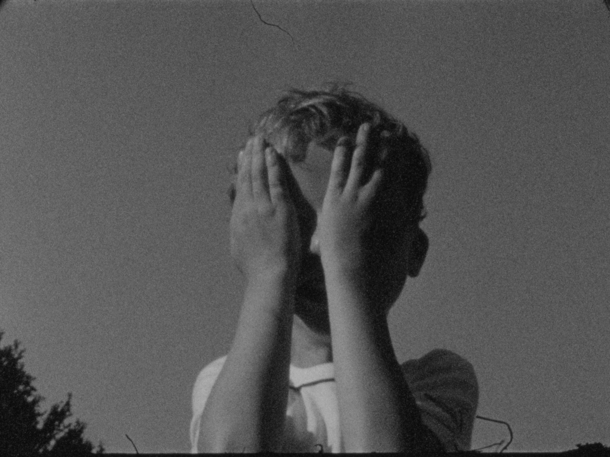
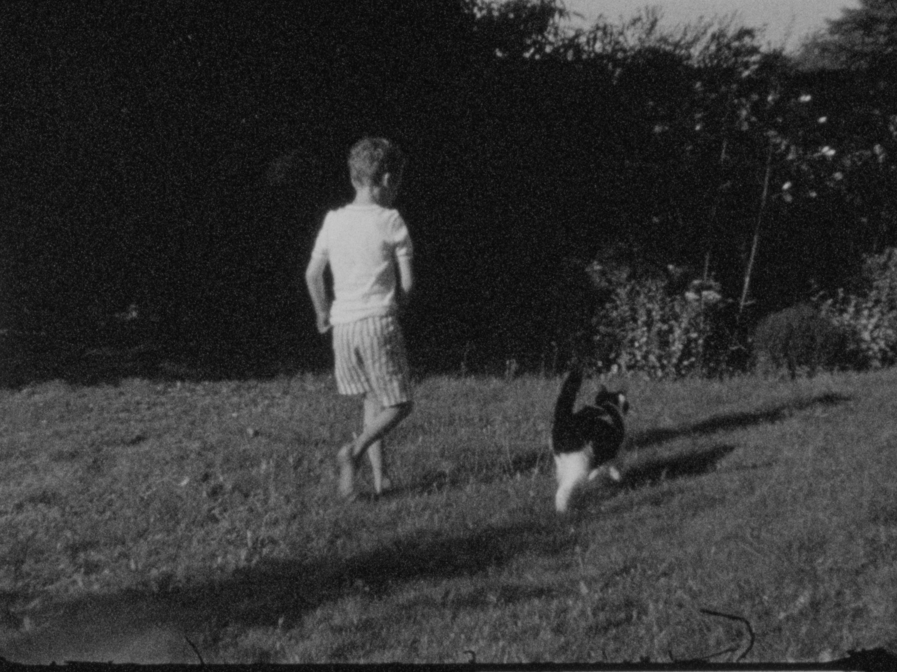
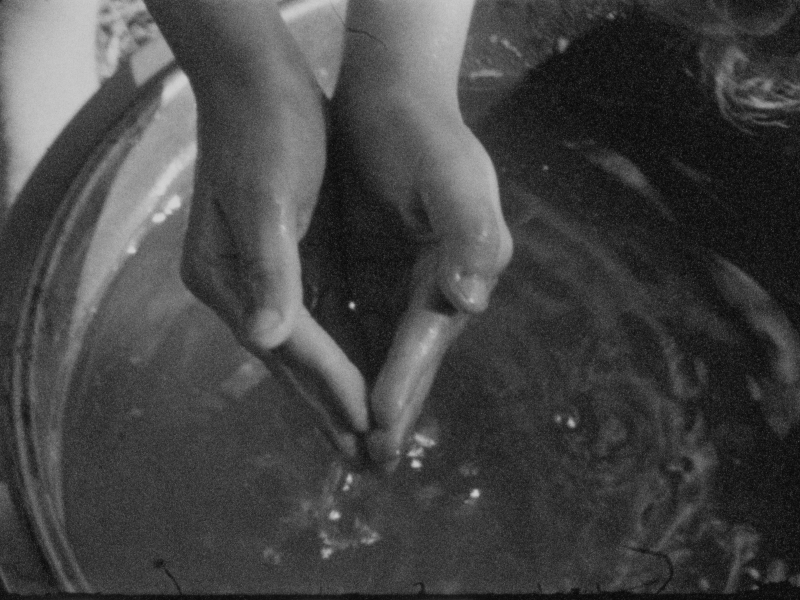

On a quiet summer day in a small village surrounded by fields, young Aldo looks for a way out of his boredom. He leaves his home and immerses himself in his fantasy world, where nature and animals inspire him to a series of imaginative adventures.


